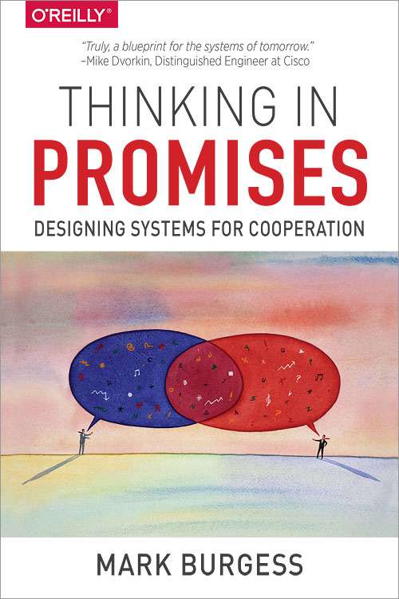
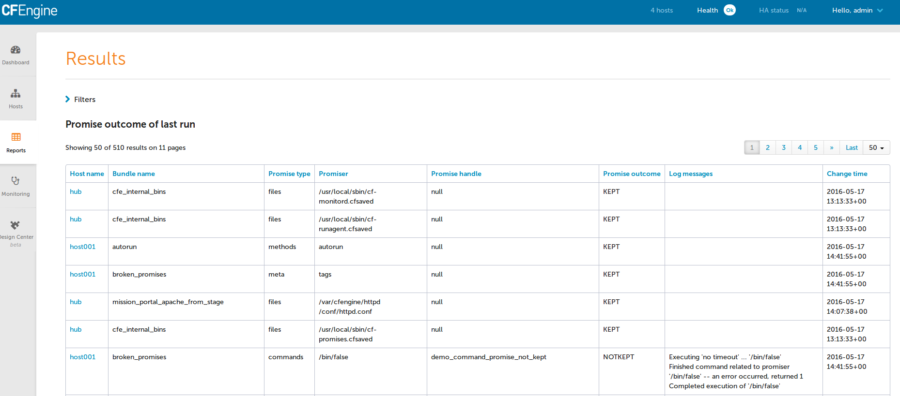

CFEngine contains a powerful language for controlling all aspects of a system. CFEngine runs primarily on UNIX and UNIX like operating systems, but can also run on Windows.
CFEngine is very extensive and powerful. In this presentation you will learn only a subset of what CFEngine can do. A mere tip of the iceberg, but this will represent the bulk of what you do with CFEngine. In other words, you'll learn the 20% of CFEngine that will do 80% of the work.
Want to know more?
You can get a copy of this presentation any time on Github.
These are the major components of CFEngine that you will encounter on a day to day basis.
cf-agentcf-monitordcf-execdcf-serverdcf-agent
cf-agent is the command you will use most often. It is used to apply policy to
your system. If you are running any CFEngine command from the command line,
there's a greater than 99% chance that this is it.
cf-monitord
cf-monitord monitors various statistics about the running system. This
information is made available in the form of classes and variables.
You'll almost never use cf-monitord directly. However the data provided by
cf-monitord is available to cf-agent.
cf-execd
cf-execd is a periodic task scheduler. You can think of it like cron on
steroids.
By default CFEngine runs and enforces policies every five minutes. cf-execd
is responsible for making that happen.
cf-serverd
cf-serverd runs on the CFEngine server, as well as all clients.
cf-runagent requests
cf-runagent allows you to request ad-hoc policy runs. I rarely use it.
It is very likely that you have only ever used imperative languages. Examples of imperative languages include C, Perl, Ruby, Python, shell scripting, etc. Name a language. It's probably imperative.
CFEngine is a declarative language. The CFEngine language is merely a description of the final state. CFEngine uses convergence to arrive at the described state.
Imperative languages execute step by step in sequence.
For Example:
Imperative starts at known state A and transforms to known state B.
It is not a list of steps to achieve an outcome but a description of the desired state. Because of this any deviation from the desired state can be detected and corrected.
In other words, a declarative system can begin in any state, not simply a known state, and transform into the desired state.
Declarative states a list of things which must be true. It does not state how to make them true.
When a system has reached the desired state it is said to have reached convergence.
Promise theory is the fundamental underlying philosophy that drives CFEngine.
It is a model of voluntary cooperation between individual, autonomous actors or agents who publish their intentions to one another in the form of promises.
A file (e.g., /etc/apache2/httpd.conf) can make promises about its own
contents, attributes, etc. But it does not make any promises about a process.
A process (e.g., httpd) can make a promise that it will be running. But it
does not make any promises about its configuration.
The configuration file and the process are autonomous. Each makes promises about itself which cooperates toward an end.

type: context:: "promiser" -> "promisee" attribute1 => "value", attribute2 => value2;
any::. Promises with a context will
only apply if the given context is true.type: context:: "promiser" -> "promisee" attribute1 => "value", attribute2 => body;
Each promise can have one or more attributes that describe the parameters of the promise. The available attributes will vary depending on the promise type.
The value can be either a text string (which must be quoted) or another object (which must not be quoted). All of the attributes together are called the body of the promise (as in "the body of an e-mail", or "the body of a contract").
Attributes are separated by commas. Each promise ends with a semi-colon.
files: linux:: "/tmp/hello/world" -> { "Student" } create => "true";
files.linux (it will only apply if running a
Linux kernel)./tmp/hello/world.files: promise and append a . to the
directory name (e.g., /tmp/hello/.)A bundle is a collection of promises. It is a logical grouping of any number of promises, usually for a common purpose. E.g., a bundle to configure everything necessary for Apache to function properly.
For example, a bundle to configure Apache might:
httpd process is runninghttpd process when necessarybundle type name { type: context:: "promiser" -> "promisee" attribute1 => "value", attribute2 => value; type: context:: "promiser" -> "promisee" attribute1 => "value", attribute2 => value; }
Bundles apply to the binary that executes them. E.g., agent bundles apply to
cf-agent while server bundles apply to cf-serverd.
Bundles of type common apply to any CFEngine binary.
For now you will only create agent or common bundles.
I stated before that the attributes of a promise, collectively, are called the body. Depending on the specific attribute the value of an attribute can be an external body.
A body is a collection of attributes. These are attributes that supplement the promise.
body type name { attribute1 => "value", attribute2 => "values"; }
The difference between a bundle and a body is that a bundle contains promises while a body contains only attributes.
Take a moment to let this sink in.
The distinction is subtle, especially at first and many people are tripped up by this.
In a body, each attribute ends with a semi-colon.
Bundles and bodies can be paramaterized for abstraction and re-usability. In other words you can define one and call it even passing in parameters which will implicitly become variables.
body type name (my_param) { attribute1 => "$(my_param)"; }
The parameter my_param is accessed as a variable by $(my_param).
The Masterfiles Policy Framework is the default policy that ships with CFEngine. The standard library is included.
The CFEngine Standard Library comes bundled with CFEngine in the
masterfiles/lib/ directory.
The standard library contains ready to use bundles and bodies that you can include in your promises and is growing with every version of CFEngine. Get to know the standard library well, it will save you much time.
These are the building blocks. You now know what they all are.
Now we will go through some examples.
I encourage you to try executing the examples as we go along.
To execute a policy run the following command:
$ cf-agent --file ./test.cf --bundle bundlename
Note: Make sure you use the correct file and bundle name! For any examples using a bundle named main you can skip specifying the bundle.
bundle agent main { commands: "/bin/echo Hello World!"; }
bundle agent example { files: "/etc/shadow" perms => perms_for_shadow_files; "/etc/gshadow" perms => perms_for_shadow_files; } body perms perms_for_shadow_files { owners => { "root" }; groups => { "shadow" }; mode => "0640"; }
cf-agent)./etc/shadow and /etc/gshadow.perms_for_shadow_files.
Note: The values for owners and groups is enclosed in curly braces. This is
because these attributes take a list of strings (aka, an slist).
bundle agent example { files: "/etc/motd" copy_from => cp("/repo/motd"); } body copy_from cp (from) { servers => { "$(sys.policy_hub)" }; source => "$(from)"; compare => "digest"; }
/etc/motd from the CFEngine server$(sys.policy_hub) is an automatic variable which contains the CFEngine
server's address./repo/motd is on the server's filesystem.compare type tells CFEngine how to know when the file needs updating.bundle agent main { files: "/etc/ssh/sshd_config" edit_line => deny_root_ssh; } bundle edit_line deny_root_ssh { delete_lines: "^PermitRootLogin.*" insert_lines: "PermitRootLogin no" }
^PermitRootLogin.*.PermitRootLogin no at the end of the file.set_config_values() from the
standard library.A class is like a tag (like tagging a photo). Classes are used to give a promise context. There are two types of classes.
linux.Here is a list of hard classes defined on an actual system running CFEngine.
cf-promises --show-classes
Class name Meta tags 127_0_0_1 inventory,attribute_name=none,source=agent,hardclass 172_17_0_1 inventory,attribute_name=none,source=agent,hardclass 192_168_42_189 inventory,attribute_name=none,source=agent,hardclass 4_cpus source=agent,derived-from=sys.cpus,hardclass 64_bit source=agent,hardclass Afternoon time_based,source=agent,hardclass Day7 time_based,source=agent,hardclass GMT_Day7 time_based,source=agent,hardclass GMT_Evening time_based,source=agent,hardclass GMT_Hr21 time_based,source=agent,hardclass GMT_Hr21_Q3 time_based,source=agent,hardclass GMT_Lcycle_0 time_based,source=agent,hardclass GMT_May time_based,source=agent,hardclass GMT_Min40_45 time_based,source=agent,hardclass GMT_Min43 time_based,source=agent,hardclass GMT_Q3 time_based,source=agent,hardclass GMT_Saturday time_based,source=agent,hardclass GMT_Yr2016 time_based,source=agent,hardclass Hr16 time_based,source=agent,hardclass Hr16_Q3 time_based,source=agent,hardclass Lcycle_0 time_based,source=agent,hardclass May time_based,source=agent,hardclass Min40_45 time_based,source=agent,hardclass Min43 time_based,source=agent,hardclass Q3 time_based,source=agent,hardclass Saturday time_based,source=agent,hardclass Yr2016 time_based,source=agent,hardclass any source=agent,hardclass cfengine inventory,attribute_name=none,source=agent,hardclass cfengine_3 inventory,attribute_name=none,source=agent,hardclass cfengine_3_8 inventory,attribute_name=none,source=agent,hardclass cfengine_3_8_1 inventory,attribute_name=none,source=agent,hardclass common cfe_internal,source=agent,hardclass compiled_on_linux_gnu source=agent,hardclass debian inventory,attribute_name=none,source=agent,hardclass debian_jessie inventory,attribute_name=none,source=agent,hardclass enterprise inventory,attribute_name=none,source=agent,hardclass enterprise_3 inventory,attribute_name=none,source=agent,hardclass enterprise_3_8 inventory,attribute_name=none,source=agent,hardclass enterprise_3_8_1 inventory,attribute_name=none,source=agent,hardclass enterprise_edition inventory,attribute_name=none,source=agent,hardclass fe80__5ee0_c5ff_fe9f_f38f inventory,attribute_name=none,source=agent,hardclass feature source=agent,hardclass feature_curl source=agent,hardclass feature_def source=agent,hardclass feature_def_json source=agent,hardclass feature_def_json_preparse source=agent,hardclass feature_xml source=agent,hardclass feature_yaml source=agent,hardclass have_aptitude inventory,attribute_name=none,source=agent,hardclass ipv4_127 inventory,attribute_name=none,source=agent,hardclass ipv4_127_0 inventory,attribute_name=none,source=agent,hardclass ipv4_127_0_0 inventory,attribute_name=none,source=agent,hardclass ipv4_127_0_0_1 inventory,attribute_name=none,source=agent,hardclass ipv4_172 inventory,attribute_name=none,source=agent,hardclass ipv4_172_17 inventory,attribute_name=none,source=agent,hardclass ipv4_172_17_0 inventory,attribute_name=none,source=agent,hardclass ipv4_172_17_0_1 inventory,attribute_name=none,source=agent,hardclass ipv4_192 inventory,attribute_name=none,source=agent,hardclass ipv4_192_168 inventory,attribute_name=none,source=agent,hardclass ipv4_192_168_42 inventory,attribute_name=none,source=agent,hardclass ipv4_192_168_42_189 inventory,attribute_name=none,source=agent,hardclass linux inventory,attribute_name=none,source=agent,derived-from=sys.class,hardclass linux_4_2_0_25_generic source=agent,derived-from=sys.sysname,derived-from=sys.release,hardclass linux_x86_64 source=agent,derived-from=sys.sysname,derived-from=sys.machine,hardclass linux_x86_64_4_2_0_25_generic source=agent,derived-from=sys.sysname,derived-from=sys.machine,derived-from=sys.release,hardclass mac_02_42_73_74_b9_97 inventory,attribute_name=none,source=agent,hardclass mac_5c_e0_c5_9f_f3_8f inventory,attribute_name=none,source=agent,hardclass net_iface_docker0 source=agent,hardclass net_iface_lo source=agent,hardclass net_iface_wlan0 source=agent,hardclass nickanderson_thinkpad_w550s inventory,attribute_name=none,source=agent,derived-from=sys.fqhost,hardclass nova inventory,attribute_name=none,source=agent,hardclass nova_3 inventory,attribute_name=none,source=agent,hardclass nova_3_8 inventory,attribute_name=none,source=agent,hardclass nova_3_8_1 inventory,attribute_name=none,source=agent,hardclass nova_edition source=agent,hardclass systemd inventory,attribute_name=none,source=agent,hardclass ubuntu inventory,attribute_name=none,source=agent,hardclass ubuntu_15 inventory,attribute_name=none,source=agent,derived-from=sys.flavor,hardclass ubuntu_15_10 inventory,attribute_name=none,source=agent,hardclass x86_64 source=agent,derived-from=sys.machine,hardclass
bundle agent apache_config { files: debian:: "/etc/apache2/apache2.conf" copy_from => remote_cp("/cfengine/repo/debian/apache2.conf","$(sys.policy_hub)"); redhat:: "/etc/httpd/conf/httpd.conf" copy_from => remote_cp("/cfengine/repo/redhat/httpd.conf","$(sys.policy_hub)"); solaris:: "/etc/apache2/2.2/httpd.conf" copy_from => remote_cp("/cfengine/repo/solaris/httpd.conf","$(sys.policy_hub)"); }
This set of promises will copy the appropriate apache config file depending on the type of server. Notice that each file promise is prefixed by a class. The promise will be skipped unless that class is defined on the system.
Thus, only Debian systems will run the debian:: context promise, only Red Hat
will run redhat:: and only Solaris will run solaris::.
The promise type and class context don't need to be listed for every promise. Think of each like a heading in an outline. Everything that follows is still under the same heading until a new heading is declared. If a new promise type is declared the class context is reset as well.
bundle agent example { files: solaris:: "/tmp/hello/world" create => "true"; "/tmp/foo/bar" create => "true"; linux:: "/dev/shm/hello_world" create => "true"; commands: "echo Hello World"; }
The first three promises are of type files. The first two will only execute on
solaris while the third will only execute on linux. The last promise has a
new promise type, of commands, and will always execute.
I said that only Debian systems will run debian:: and only Red Hat will run
redhat::. This isn't exactly true.
ubuntu and debian defined
as hard classes.centos and
redhat defined as hard classes.This goes for any distro that is based on another distro. The "parent" classes will be also defined.
bundle agent apache_config { files: "/etc/apache2/apache2.conf" copy_from => remote_cp("/cfengine/repo/debian/apache2.conf","$(sys.policy_hub)") classes => if_repaired("RestartApache"); commands: RestartApache:: "/usr/sbin/apache2ctl graceful"; }
This set of promises will first copy the Apache configuration file. Once the Apache configuration file is updated, Apache must be restarted. In order to make sure that Apache gets restarted when necessary a class will be defined when the configuration file is updated.
When CFEngine reaches the commands section, if the RestartApache class is
defined (which only happens if the config file is updated) then Apache will be
restarted.
bundle agent apache_config { files: "/etc/apache2/apache2.conf" copy_from => remote_cp("/cfengine/repo/debian/apache2.conf","$(sys.policy_hub)"), classes => if_repaired("RestartApache"); commands: RestartApache:: "/usr/sbin/apache2ctl graceful"; }
So, the workflow then is:
I use this ALL. THE. TIME. If this class is to teach you 20% that accomplishes 80%, this slide is the 5% that accomplishes 95%.
commands: RestartApache.debian:: "/usr/sbin/apache2ctl graceful"; RestartApache.redhat:: "/usr/sbin/apachectl graceful";
This example is similar to the last one, except that Debian and Redhat each have
different commands used to restart Apache. Therefore, we use an expression to
define our class context. The expression RestartApache.debian means
"RestartApache and debian".
commands: RestartApache.debian:: "/usr/sbin/apache2ctl graceful"; RestartApache.redhat:: "/usr/sbin/apachectl graceful";
| Operator | Meaning | Example |
|---|---|---|
. and & |
boolean and | debian.Tuesday:: |
ǀ and ǀǀ |
boolean or | TuesdayǀWednesday:: |
! |
boolean not | !Monday:: |
( ) |
Explicit grouping | (debianǀredhat).!ubuntu.!centos:: |
bundle agent apache { processes: "apache2" restart_class => "StartApache"; commands: StartApache:: "/etc/init.d/apache2 start"; }
This policy uses a processes promise to check the process table (with ps)
for the regular expression .*apache2.*. If it is not found then the class
StartApache will get defined.
When CFEngine executes commands promises Apache will be started.
bundle agent stop_bluetooth { processes: "bluetoothd" process_stop => "/etc/init.d/bluetooth stop"; }
This policy uses a processes promise to check the process table (with ps)
for the regular expression .*bluetoothd.*. If it is found the process_stop
command is executed.
bundle agent stop_bluetooth { processes: "bluetoothd" signals => { "term", "kill" }; }
This policy uses a processes promise to check the process table (with ps)
for the regular expression .*bluetoothd.*. Any matching process is sent the
term signal, then sent the kill signal.
Note: The promise bluetoothd becomes the regular expression,
.*bluetoothd.* that is matched against the output of ps. This means that it
can match anywhere on the line (in versions prior to 3.9), not just the
process name field. Caveat emptor!
bundle agent apache { services: "www" service_policy => "start"; }
This uses the services promise type to ensure that Apache is always running.
The standard_services bundle implementation currently covers systemd,
chkconfig, the service command, svcadm and systemV init scripts. Proper
functionality relies on each installed service correctly implementing a service
check as appropriate for the init system in use.
bundle agent stop_bluetoothd { services: "bluetoothd" service_policy => "stop"; }
This policy uses a services promise type to ensure that Bluetooth services are
not running. Again, this only works for services that are defined under
standard_services in the standard library and requires cfengine 3.4.0 or
higher.
The same restrictions about distros apply to stopping services promises.
bundle agent install { packages: "zsh" package_policy => "addupdate", package_method => apt, package_select => ">=, package_version => "4.3.10-14"; }
package_policy of add update will install or upgrade. Using add
will only install, never upgrade, upgrade will upgrade only and delete
will uninstall.package_method of apt is in the standard library, look there for other
package methods (e.g., rpm, ips, etc.).package_select of >= means the installed version must be equal to or
newer than the specified version or it will be replaced. Using <= would
downgrade, if the package_method supports downgrading and == will
require the exact version.bundle agent install { packages: "zsh" policy => "present", package_module => yum, version => "latest"; }
policy of present will make sure the package is installed on the
system, while a policy of absent will ensure a package is not installed.package_module of yum is included in the Masterfiles Policy Framework.version of latest means the installed version should be the latest
available. Alternatively you can provide an explicit version.
package_methods
pip(flags), npm(dir), npm_g, brew(user), apt, apt_get,
apt_get_permissive, apt_get_release(release), dpkg_version(repo),
rpm_version(repo), windows_feature, msi_implicit(repo),
msi_explicit(repo), yum, yum_rpm, yum_rpm_permissive,
yum_rpm_enable_repo(repoid), yum_group, rpm_filebased(path), ips,
smartos, smartos_pkg_add(repo), opencsw, solaris(pkgname, spoolfile,
adminfile), solaris_install(adminfile), freebsd, freebsd_portmaster,
alpinelinux, emerge, pacman, zypper, generic
package_modules
yum, apt_get, freebsd_ports, nimclient, pkg, pkgsrc
Hello from {{{vars.sys.fqhost}}}!
{{#classes.linux}}I am a Linux Box!{{/classes.linux}}
{{^classes.windows}}I am NOT a Windows Box{{/classes.windows}}
bundle agent main{ files: "/tmp/example" create => "true", edit_template => "$(this.promise_dirname)/template.mustache", template_method => "mustache"; }
bundle agent tidy { files: "/var/log/.*" file_select => days_old("7"), delete => tidy; }
This policy will delete any files in /var/log/ older than 7 days. The
days_old() and tidy bodies are included in the standard library,
To delete a file indiscriminately, omit the file_select.
Look up file_select and tidy in the reference-manual to find more ways to
use this.
Before starting you need to have cfengine installed on the server and the client and the server FQDN must be set properly in DNS (or use the IP addresses). This is ideally handled by your provisioning process. Along with automating server function you should also be automating your provisioning process.
Some ways of automating provisioning are kickstart, preseed, fai, cobbler, disk imaging, instance cloning, etc, etc. This, of course, is not a complete list.
Edit /var/cfengine/masterfiles/def.cf to set the acl list for the IP
addresses of your network, then run:
cf-agent --bootstrap $(hostname --fqdn) cf-agent -KI
Simply run:
cf-agent --bootstrap server.fqdn.example.com
You can use the server's IP address instead of the DNS name.
The policy files are in /var/cfengine/masterfiles on the server (also known as
the policy_hub) and are copied to /var/cfengine/inputs. All clients then
copy /var/cfengine/inputs from the server.
<div style=text-align:center"></div>
Now edit the policy in /var/cfengine/masterfiles on the server and watch for
the changes to happen on the client.
As you write new policies, each bundle needs to be listed in the
bundlesequence and each file needs to be listed in inputs. Both of these are
under body common control inside of promises.cf.
Bundles are executed in the order they are listed in the bundlesequence, but
inputs can be listed in any order.
CFEngine logs to /var/cfengine/promise_summary.log. Here's an example log message:
1463018982,1463018990: Outcome of version CFEngine Promises.cf 3.7.0 (agent-0):\ Promises observed - Total promise compliance: 93% kept, 3% repaired,\ 4% not kept (out of 148 events).\ User promise compliance: 93% kept, 2% repaired, 5% not kept (out of 130 events). CFEngine system compliance: 94% kept, 6% repaired, 0% not kept (out of 18 events).
Note: The timestamp is a Unix epoch.
CFEngine will also send an email to the configured address in body executor
control= any time there is output from an agent run that differed from the
previous run.
And finally you can use the -I flag to have CFEngine inform you of repairs.
(Shown here along with the -K flag which ignores any lock timers).
cf-agent -KI

Inevitably, something will go wrong, and you will need to dig deep to figure something out. Lucky for you, I have some tips for debugging.
Again, using -K to disable locks is useful.
CFEngine's verbose output can be fantastic for debugging. Use the -v flag to
turn it on.
cf-agent -Kv | grep -A 5 "BEGIN bundle"
When viewing verbose output, look for BUNDLE <name> for the bundle that you
suspect is having trouble.
verbose: B: BEGIN bundle main verbose: B: ***************************************************************** verbose: P: ......................................................... verbose: P: BEGIN promise 'promise_promises_cf_4' of type "reports" (pass 1) verbose: P: Promiser/affected object: 'Hello World!' verbose: P: Part of bundle: main
CFEngine will tell you exactly what is going on with each promise, in excruciating detail.
verbose: Using literal pathtype for '/tmp/touch' verbose: No mode was set, choose plain file default 0600 info: Created file '/tmp/touch', mode 0600 verbose: Handling file existence constraints on '/tmp/touch' verbose: A: Promise REPAIRED verbose: P: END files promise (/tmp/touch...)
CFEngine supports comments as part of its data structure. Every promise can
have a comment attribute whose value is a quoted text string.
bundle agent example { files: "/etc/bind/named.cache" copy_from => scp("$(def.files)/bind/named.cache"), comment => "More recent copy of named.cache than shipped with bind"; }
Comments show up in the verbose output.
verbose: P: Container path : '/default/main/files/'/etc/bind/named.cache'[0]' verbose: P: verbose: P: Comment: More recent copy of named.cache than shipped with bind. verbose: P: .........................................................
The comment should always be why the promise is being made. Up until now none of the examples have used comments to save space on the slide. When writing your policies for real every promise should have a meaningful comment.
You'll thank me when this saves the day.
When debugging, promise handles are also useful. Again, every promise can have
a handle attribute whose value is a quoted canonical string.
bundle agent example{ files: "/etc/bind/named.cache" copy_from => scp("$(def.files)/bind/named.cache"), handle => "update_etc_bind_named_cache", comment => "More recent copy of named.cache than shipped with bind"; }
CFEngine will tell you the handle of each promise in the verbose output.
verbose: P: BEGIN promise 'update_etc_bind_named_cache' of type "files" (pass 1) verbose: P: Promiser/affected object: '/etc/bind/named.cache' verbose: P: Part of bundle: example verbose: P: Base context class: any
By giving each promise a unique handle you can swiftly jump back and forth between your debug output and your policy file. When writing your policies for real every promise should have a unique handle.
You'll thank me when this saves the day.
When debugging, promise stakeholders aka promisees are useful for understanding who cares about a given promise.
bundle agent example { files: "/etc/bind/named.cache" -> { "Operations", "Nick Anderson" } copy_from => scp("$(def.files)/bind/named.cache"), handle => "update_etc_bind_named_cache", comment => "More recent copy of named.cache than shipped with bind"; }
CFEngine will tell you additional info about each promise.
verbose: Additional promise info: handle 'update_etc_bind_named_cache'\
source path './t.cf' at line 4 promisee {'Operations','Nick Anderson'}\
comment 'More recent copy of named.cache than shipped with bind.'
When debugging variables and classes promise meta data is useful to help identify variables and classes with specific attributes.
bundle agent main{ classes: "my_class" expression => "any", meta => { "mytag" }; vars: "my_var" string => "value", meta => { "mytag" }; "my_vars" slist => variablesmatching(".*", "mytag" ); "my_classes" slist => classesmatching(".*", "mytag" ); reports: "My var: $(my_vars)"; "My class: $(my_classes)"; }
Note: Promise meta data is not currently displayed in the CFEngine's verbose output.
Here's a list of topics that I didn't cover. This is to give you a taste of the rest of the power that is behind CFEngine. Dig deeper by checking them out in the reference manual.
vars: promises — Varables, strings, integers and reals (and lists of each).methods: promises — Create a self-contained bundle that can be called like a
function.guest_environments: promises — Promise the existence of virtual machines.storage: promises — For local or remote (NFS) filesystems.database promises — Promise the schema of your database, CFEngine does the
SQL for you.edit_xml: promises - Promise by path, CFEngine does the XML for you.cf-monitor.site_lib.cf and add your custom
library bundles and bodies there. This helps with upgrading because you won't
have to patch your changes into the new version of the library. When you feel
a bundle or body is ready for public use you can submit it to CFEngine by
opening a pull request on Github.all_lower_case_separated_by_underscores.
Whenever I define classes myself I use CamelCase.masterfiles?
git to revision control masterfiles.CLOSED: [2016-05-19 Thu 13:13]
:ID: 725599cb-9873-432e-b772-ef2f548a49fc
Mentioned in Pro tips. There is sooooooo much to share! And this presentation is only 45 minutes.
Noted by Trix Farrar @BasementTrix
Created by Nick Anderson.